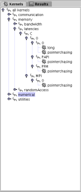

|  | On the left side of the screen, you should see a tree, which has initially the same structure like the kernel directory of BenchIT. This is the Kerneltree, where you can select the kernels you want to start or edit. Select a single Kernel by clicking a leaf, select several by clicking nodes or hold CTRL down while selecting nodes and leaves. The last selected node or leaf will be shown on the left side. While the files are loaded, you can watch the progress at the lower left corner. |